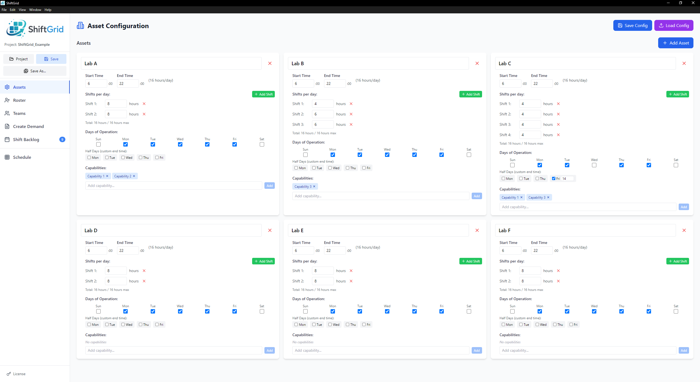
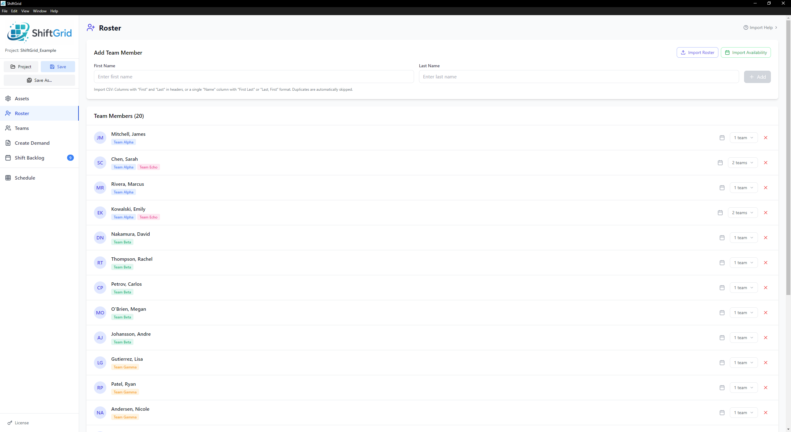
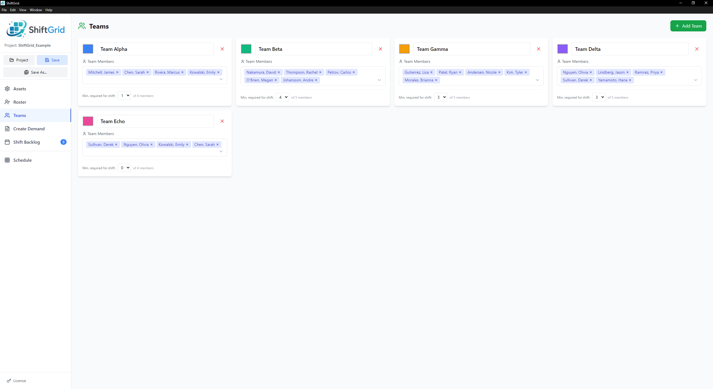
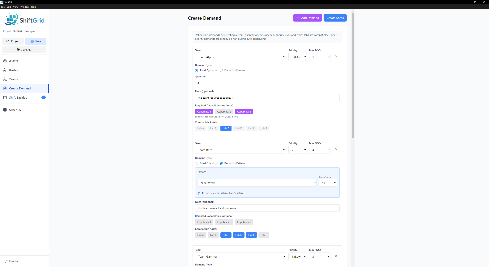
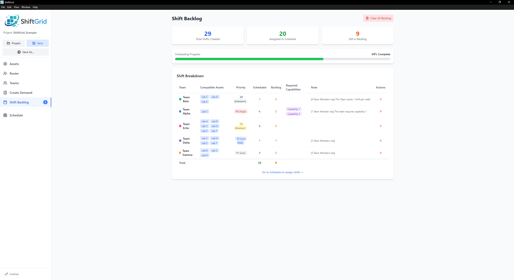
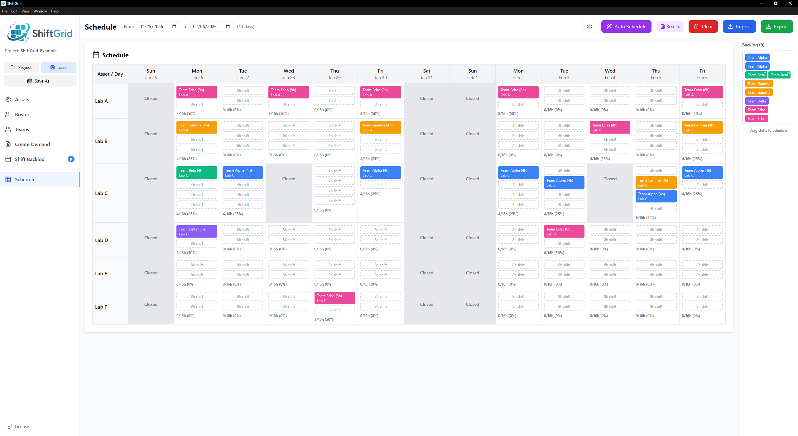
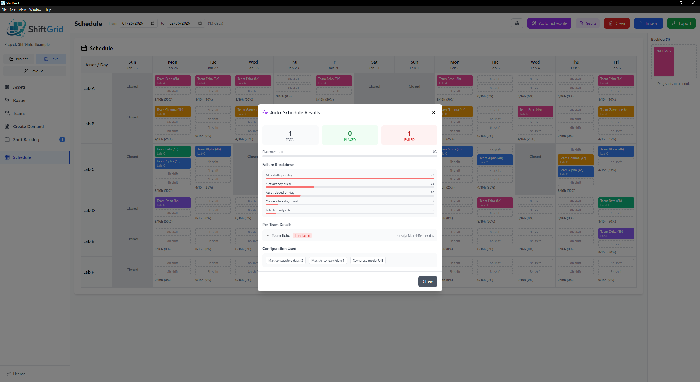
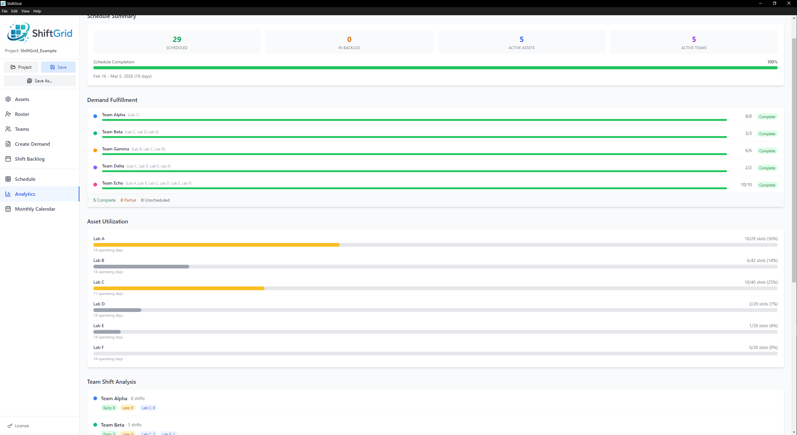

Features
ShiftGrid guides you through a simple workflow: configure your resources, set up teams, define demands, and build your schedule.

Assets
Configure the resources you need to schedule — labs, rooms, equipment, or workstations.
- Set operating hours and days of operation
- Define shift lengths (e.g., 8-hour shifts)
- Add multiple shifts per day
- Tag assets with capabilities (e.g., "High Security", "Equipment X")
- Project-level capability management with shared resource quantity constraints
- Mark half days with custom end times

Roster
Manage all team members in one central location before assigning them to teams.
- Add team members with first and last name
- Bulk import from CSV
- Assign members to multiple teams
- Assign specific team members to individual shifts via drag-and-drop or auto-scheduler
- Track unavailable dates per person
- Import availability calendars (PTO, vacation)

Teams
Create teams and assign roster members. Each team gets a color for visual identification.
- Create unlimited teams
- Assign team colors
- Add/remove members via searchable dropdown
- Set minimum required POCs for shifts
- Members can belong to multiple teams

Create Demand
Define how many shifts each team needs and where they can be placed.
- Fixed quantity or recurring patterns
- Recurring options: every weekday, N per week, specific days
- Set priority levels (higher = scheduled first)
- Require specific asset capabilities
- Restrict to compatible assets
- Add notes that appear on shift cards

Shift Backlog
View all generated shifts waiting to be scheduled, with progress tracking.
- Summary stats: total, assigned, remaining
- Visual progress bar
- Shifts grouped by demand
- See compatible assets and priority
- Clear individual rows or all backlog

Schedule
The main calendar grid where you build and manage your schedule.
- Drag-and-drop from backlog to calendar
- Move shifts between days and assets
- Incompatible assets greyed out while dragging
- One-click auto-scheduler (Spread or Compress mode)
- Click any shift to view full details (date/time, team, POCs, capabilities, notes)
- Real-time conflict warnings
- Export to CSV
- Import existing schedules with conflict resolution

Auto-Scheduler
Let ShiftGrid build your schedule automatically while respecting all constraints.
- Spread mode: distributes shifts evenly across the period
- Compress mode: packs shifts as densely as possible
- Configurable max consecutive days (1-14)
- Configurable max shifts per team per day
- Respects late-to-early rules, POC availability, capabilities
- Diagnostics modal shows exactly why shifts couldn't be placed

Analytics
A schedule health dashboard that gives you instant visibility into how your schedule is performing.
- Demand fulfillment tracking across all teams
- Asset utilization breakdown
- Team shift analysis and distribution
- POC workload metrics per person

Monthly Calendar
A month-at-a-glance view for each asset, so you can see the big picture at a glance.
- Per-asset calendar with color-coded shifts
- Navigate between months
- Today highlighting
- Quick visual overview of coverage and gaps
Ready to Try ShiftGrid?
Download now and start your free 14-day trial.